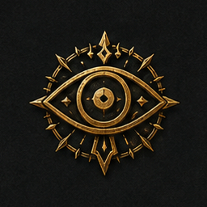

Героическое фэнтези
Эпические истории, сражения и магия.
Мир меча и магии, где руины шепчут легенды, державы борются за влияние, а решения героев навсегда меняют ход истории.
Эпические истории, сражения и магия.
Народы, континенты и разные традиции.

Ваш выбор способен изменить будущее.
Опасности, сокровища и чудовища.
Свобода создать своего героя.
История продолжается между сессиями.
Влияй на политику и оставь след.
Все правила доступны публично. Выберите статус, чтобы отфильтровать список.
Короткие реплики и координация допустимы в любой момент боя — в рамках здравого смысла и темпа сцены.
Если игрок собирается сделать действие, которое почти гарантированно разрушит сцену/кампанию из-за забытых фактов, он делает спасбросок Интеллекта. При успехе мастер может наративно напомнить ключевую информацию.
При повышении уровня (и при генерации ХП на старте) если на кости ХП выпала 1 — можно перебросить.
Когда мастер говорит «Щёлк», у игроков есть 5–10 секунд, чтобы сказать, что ониделают.Это — реакция на внезапное событие (ловушка, обвал, выстрел и т.п.).
При попытке уснуть на длительном отдыхе каждый персонаж бросает 1d4.Если у тебя выпало три ночи подряд 1 — получаешь 1 уровень истощения.Если три ночи подряд 4 — получаешь вдохновение.
Если на инициативе 20 — первый ход совершаешь с преимуществом.Если 1 — с помехой. Порядок ходов считается как обычно.
Если игрок быстро формулирует действие (буквально за пару секунд) — получает+1 к броскам атаки и +1 к СЛ спасбросков от своих заклинаний до конца хода.
Варианты на выбор кампанией:(1) пить зелье бонусным действием;(2) если пьёшь зелье полным действием — получаешь максимальный эффект (безбросков);(3) “поясная сумка”: бонусным действием можно пить только экипированные зелья.
Окружённый противник получает -2 к КД, но это не работает, если у негоПассивная внимательность 18+ или есть “особое зрение” (эхолокация и т.п.).
Если итог попадания ровно равен КД цели — урон делится на 2 (округление вниз).
Каждый раз, когда персонаж падает до 0 ХП и затем поднимается союзником (не воскрешение),он получает 1 уровень истощения.
Броски “смертельных спасов” делает мастер скрытно. Результат известен только по итогу:выжил персонаж или умер. Это усиливает напряжение и цену решений.
Если в сцене есть табу/опасное действие и кто-то его совершает — он кладёт в “чашу” d6.Когда чаша переполняется — срабатывает негативный эффект (обвал, урон, подкрепление врагов ит.д.).
Модификатор Интеллекта определяет, сколько “единиц обучения” можно вложить в языки,инструменты и навыки (например, +3 даёт 3 пункта обучения).
Воскрешение не работает “по умолчанию”: нужны специальные условия(ритуал, редкие компоненты, заранее подготовленные “якоря” вроде крестражей и т.п.).
Вместо обычного вдохновения используется колода одноразовых эффектов(доп. действие, узнать уязвимость, подсмотреть ХП и т.п.).
Варианты: (1) крит наносит максимальный урон ×2;(2) вместо удвоения урона можно выбрать рану с последствиями(например, попадание в ногу снижает скорость).
Можно использовать Силу для запугивания, если это логично в сцене и наративно обосновано.
Помогать можно лишь тем, кто действительно способен помочь.Пример: хилый маг не усилит “поднять валун” лучше, чем огр — нужен другой подход или этоневозможно.
Иногда мастер может позволить игроку добавить деталь мира/сцены.Если заявка слишком безумная — мастер отклоняет, либо это “бред/иллюзия”, и персонаж получаетдебаф.
Со временем мастер может выдавать очки сюжета.Потратив их, игрок может заявить значимое изменение мира/создание элемента сюжета —на короткое время становясь “DM”.
Если у двух или более персонажей совпадает инициатива, они могут объявитьсовместное действие. Эффект и бонусы определяются мастером исходя из логики сцены.
Варианты использования:(1) заклинания не требуют материальных компонентов;(2) вместо стандартных компонентов используется единый набор компонентов мага.
Используется один из вариантов:(1) вес не отслеживается вовсе;(2) упрощённый инвентарь — предметы делятся налёгкие, средние и тяжёлые, либо учитываются только громоздкие вещи.
Любое оружие можно использовать для атаки бонусным действием второй рукой,даже если оно не имеет свойства лёгкое, однако данная атака совершается с помехой.
При получении чрезвычайно большого урона (например, 70% от максимального ХП за один раз)существо получает негативный эффект — шок.Альтернативный вариант — получение длительной травмы.
Проверки навыков могут иметь критический успех или провал.Эффект крита определяется мастером и выходит за рамки обычного бонуса к броску.
Оружие может развиваться вместе с персонажем:получать улучшения, модификации или уникальные свойствав результате использования, сюжетных событий или особых ритуалов. Используется, в основном, длянаратива - например, у игрока есть фамильный меч, который придётся обменять на более сильный поурону. С механикой улучшения оружения игроку не придётся делать такой выбор, ведь он сможетулучшить своё оружие позже.
Повышение уровня и выбор архетипа должны бытьнаративно обоснованы и отыграны в мире.Мастер может потребовать сцену, обучение или событие для подтверждения роста персонажа.
Этот пункт — демонстрация визуального статуса “отменено”.У правила может быть причина/заметка.
Три шага, после которых вы сможете выбрать подходящую партию и присоединиться к истории.
Расскажи о себе, игровом опыте, предпочтениях и персонаже. Это поможет понять, подойдём ли мы друг другу.
После рассмотрения заявки тебе выдадут роль участника и откроют доступ к основным разделам сообщества.
Зайди в личный кабинет, выбери партию, узнай подробности и начни своё приключение в живом мире.
Новости кампании, общение между игроками и материалы о мире.